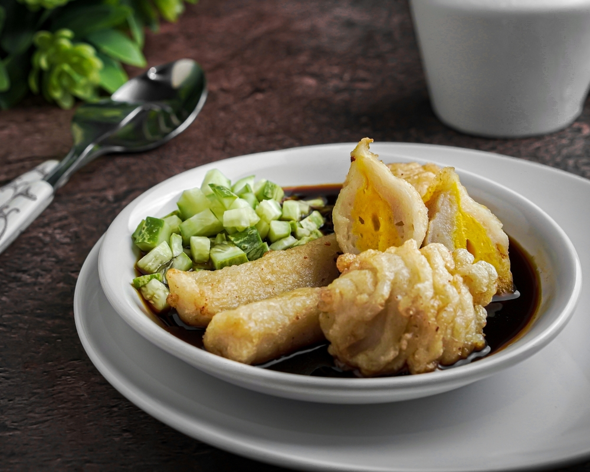
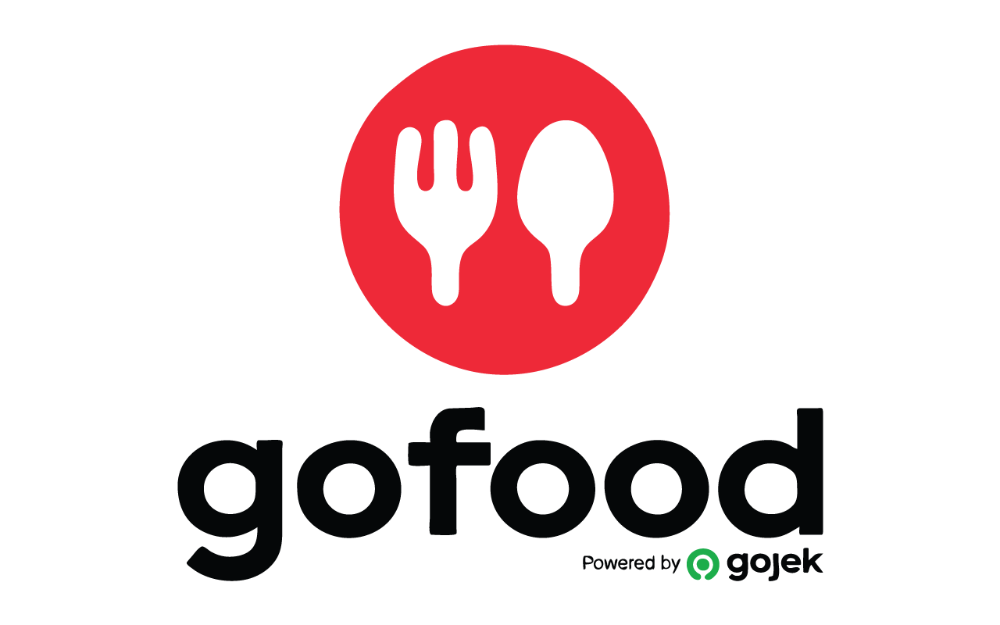

Profil

Pempek Berlian adalah usaha kuliner yang didedikasikan untuk menyajikan cita rasa asli Palembang melalui berbagai varian pempek yang lezat dan berkualitas tinggi. Kami berkomitmen untuk menjaga keaslian rasa dan kualitas setiap pempek yang kami produksi, menggunakan bahan-bahan pilihan terbaik dan proses produksi yang higienis.
Produk
Kami menyediakan beragam pilihan pempek dengan cita rasa yang lezat dan autentik.
Berikut ini ragam pilihan pempek yang ada di Pempek Berlian:

Pempek Adaan
Pempek Kapal Selam

Pempek Lenjer

Pempek Keriting
Pempek Kulit
Pempek Keju
Pempek Ayam Suwir
Pemesanan
Pemesanan produk Pempek Berlian dapat dilakukan secara langsung dengan mengunjungi toko kami di:
Jl.Raden Sanim No.17, Depok, Jawa Barat
Pemesanan juga dapat dilakukan melalui Whatsapp:
+62 812-1004-2164 (Rizky)
atau kunjungi merchant kami di GoFood dan GrabFood:

Pempek Berlian
Pempek Berlian
Dokumentasi
Our Collection
Berikut dokumentasi usaha kami.